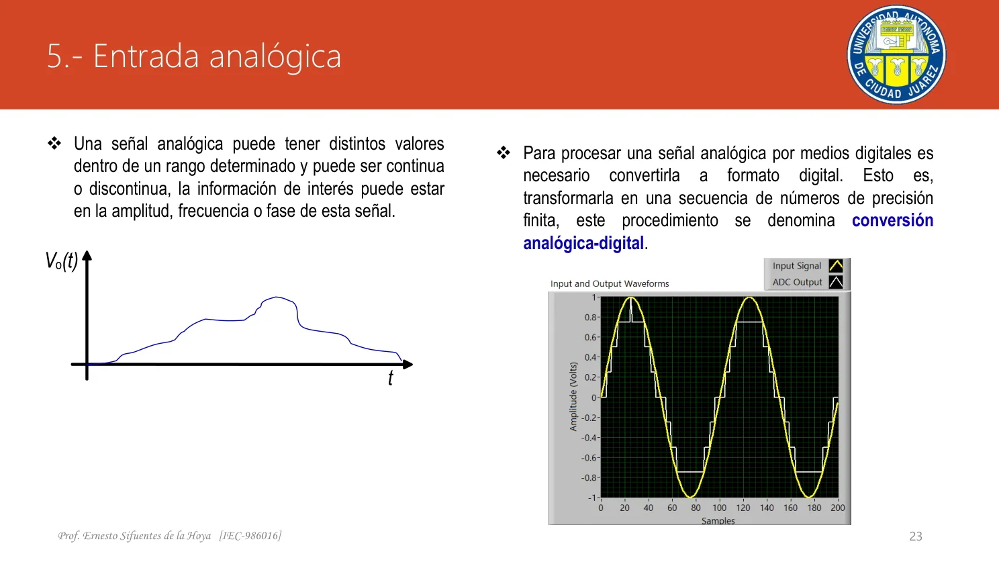
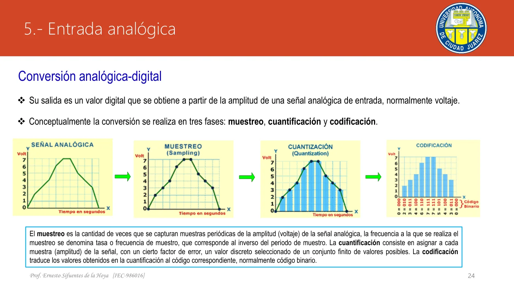
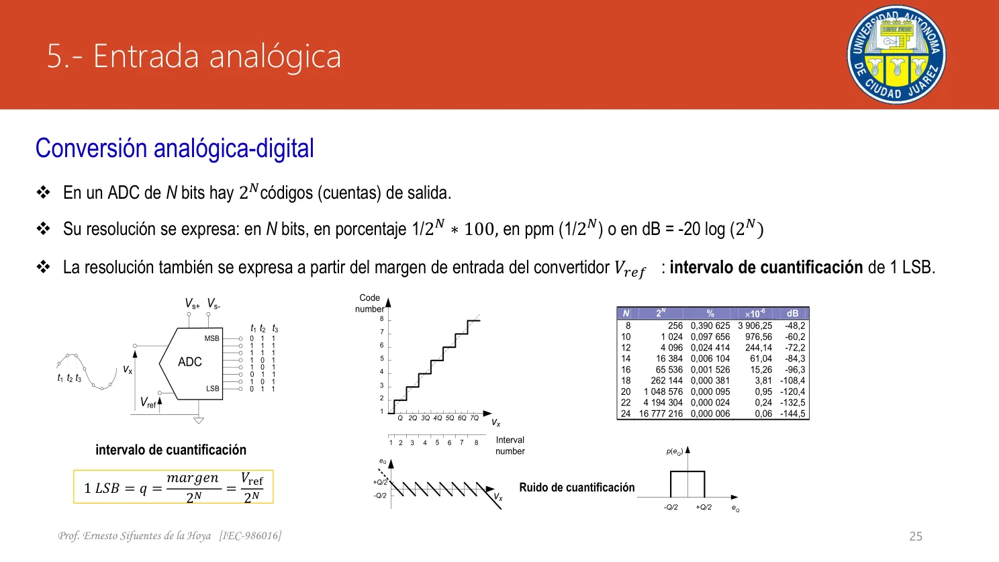
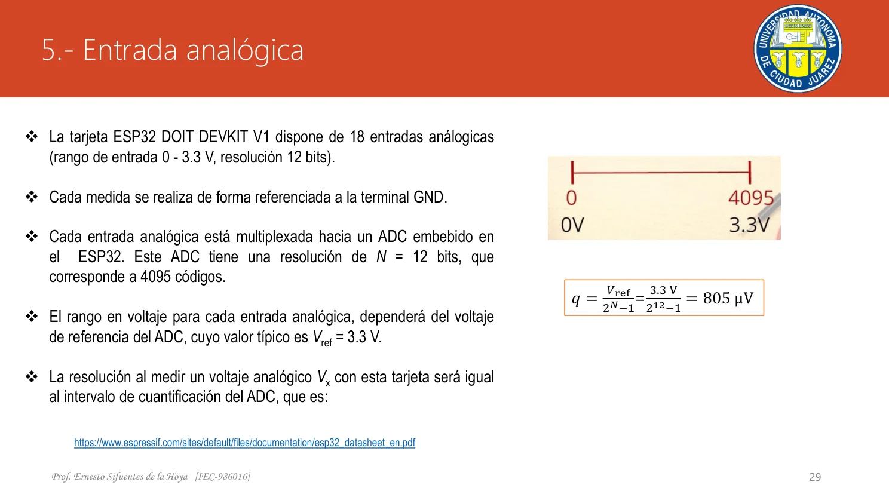

ESP32: conversión analógico-digital y medición
Lectura del ADC1, calibración, señales de baja frecuencia, análisis de errores, filtrado y aplicaciones instrumentales.
Plan de trabajo
Clase 1 · Fundamentos y caracterización (120 min)
30 min: muestreo y cuantificación · 25 min: ADC, atenuación y GPIO36 · 35 min: barrido de potenciómetro · 30 min: dos puntos y medición DMM.
Producto: tabla ADC–voltaje, curva de respuesta y registro de referencia.
Clase 2 · Señales y validación (120 min)
30 min: señales del generador · 30 min: errores frente a multímetro · 30 min: comparación de filtrado · 30 min: resultados, reporte y evaluación.
Producto: formas de onda, tabla de error y discusión sobre incertidumbre. RMS y alarmas como extensión.
Fundamentos de ingeniería
Muestreo, cuantificación y codificación
La conversión analógico-digital registra una secuencia de amplitudes en tiempos discretos. Un ADC nominal de 12 bits tiene 4096 códigos, numerados de 0 a 4095. La resolución ideal no debe confundirse con exactitud, linealidad ni rango útil.


ADC del ESP32 clásico: entrada GPIO36 (ADC1_CH0)
Potenciómetro entre 3V3 y GND; cursor al GPIO36. Compruebe los niveles con el multímetro.


Use analogRead() para obtener el código bruto y analogReadMilliVolts() para obtener una tensión estimada mediante la calibración del controlador. Configure explícitamente analogSetPinAttenuation(36, ADC_11db) y verifique siempre la medida con el multímetro.
Calibración y comparación experimental
La aproximación lineal de dos puntos no corrige completamente la no linealidad del ADC. Es preferible utilizar dos puntos interiores medidos con DMM (por ejemplo 0.50 y 2.50 V), después evaluar residuos con otros niveles independientes.
Filtrado digital y RMS
Cuando la senoidal presenta offset de continua, el RMS total incluye tanto la componente continua como la alterna. Para estimar el RMS alterno, se elimina la media dentro de la ventana.
Simulación interactiva
Cuantización ideal: resolución y códigos
Modelo ideal exclusivamente pedagógico. No representa la transferencia real del ADC del ESP32.
Comparar RMS total y RMS alterna
Programación interactiva
Seleccione un programa, examine sus instrucciones, modifique parámetros y descargue su versión. La compilación y carga al ESP32 se realizan con Arduino IDE; este editor no ejecuta firmware.
Prácticas experimentales
Complete el montaje en baja tensión, ejecute el firmware y registre datos medidos; no utilice números simulados como evidencia experimental.
A1 · Dos puntos de referencia y caracterización ADC
Adquirir 200 lecturas a dos voltajes medidos con DMM (p. ej. 0.50 y 2.50 V); estimar pendiente y offset.
A2 · Barrido con potenciómetro y Serial Plotter
Observar código ADC y milivoltios durante barrido ascendente y descendente.
A3 · Visualización de formas de onda
Adquirir seno, triángulo y cuadrada de baja frecuencia; comparar osciloscopio y Serial Plotter.
A4 · Error experimental contra multímetro
Medir cinco valores de voltaje y cuantificar error absoluto y relativo.
A5 · Reducción de ruido por promedio móvil
Comparar ventanas de 1, 10 y 20 muestras y discutir atenuación de ruido y retardo.
A6 · RMS total y RMS de componente alterna
Calcular en una ventana RMS total y RMS alterna; comparar contra la señal de referencia con offset.
A7 · Voltímetro con barra y alarmas
Implementar un indicador serial con umbrales y comprobarlo experimentalmente.
Registro de mediciones
Introduzca los datos obtenidos con el equipo físico. La tabla calcula el error sin alterar las lecturas originales.
| Punto | V_DMM (V) | Código bruto | V_ADC (V) | Error (V) | Error abs. (%) |
|---|---|---|---|---|---|
| 1 | — | — | |||
| 2 | — | — | |||
| 3 | — | — | |||
| 4 | — | — | |||
| 5 | — | — |
Error firmado = V_ADC − V_DMM; error relativo absoluto = |error| / V_DMM × 100. Evite dividir entre cero.
Evaluación formativa
Responda individualmente. La retroalimentación permite revisar los conceptos; la valoración oficial corresponde al profesor.
Tutor de aprendizaje con IA
El tutor formula preguntas, contrasta argumentos con la teoría y solicita evidencia experimental. No sustituye la medición ni debe inventar resultados.
Materiales y recursos
Consulte los documentos originales para ampliar los conceptos y desarrollar las actividades experimentales.
Presentación · Microcontrolador ESP32
36 diapositivas · características técnicas, Arduino IDE, GPIO y ADC.
Actividades L3 · ADC
32 páginas · calibración, formas de onda, comparación con multímetro, filtrado, RMS y voltímetro.